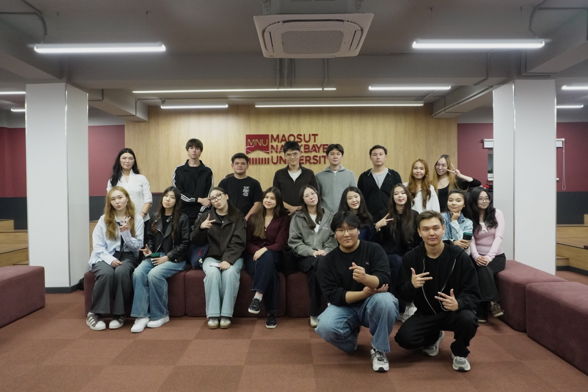

СТУДЕНЧЕСКИЕ ОРГАНИЗАЦИИ MNU
Твоё место
среди своих.
Найди команду по интересам, пройди отбор и начни делать то, что тебе действительно близко.
10 коротких вопросов · около 3 минут

Команда MNU
здесь
здесь
АМС
Уже нашли своихНАЧНИ С СЕБЯ
Какая команда тебе подойдет?
Десять коротких вопросов помогут найти направления по интересам.
ЛЮДИ, ИДЕИ, ПРОЕКТЫ
Посмотри, что есть в MNU
Вступление проходит в три шага: контакты → отбор организацией → подтверждённое участие.
ПОДБОР ОРГАНИЗАЦИИ
Подбери свою организацию
Ответь на 10 коротких вопросов. В каждом можно выбрать «Другое» и написать свой вариант.
ПРОБОВАТЬ · УЧИТЬСЯ · СОЗДАВАТЬ
Каталог организаций
Найди сообщество под свой интерес — и узнай, как к нему присоединиться.
Демо-каталог: описания и численность организаций приведены как примеры.
ПУТЬ В КОМАНДУ
Мои заявки
Ты становишься участником только после решения организации.
01КонтактыОставляешь данные и рассказываешь о себе
→02ОтборОрганизация знакомится с заявкой
→03УчастникСтатус меняется после одобрения
Твоя следующая команда еще впереди
Посмотри каталог, выбери организацию и отправь заявку.

ТВОЯ ОРГАНИЗАЦИЯ
AI
УчастникAI Club
Сообщество тех, кто хочет понять и создавать AI
НОВАЯ ИНИЦИАТИВА В MNU
Создать организацию
Опиши идею подробно — заявка пройдет рассмотрение университета.
1Основное2Идея и команда3План и отправка
1 / 3